Transfer Between Your Personal Accounts
This guide will show you how to transfer funds between your checking and saving accounts, and schedule recurring transfers
1
Tap "Move Money"
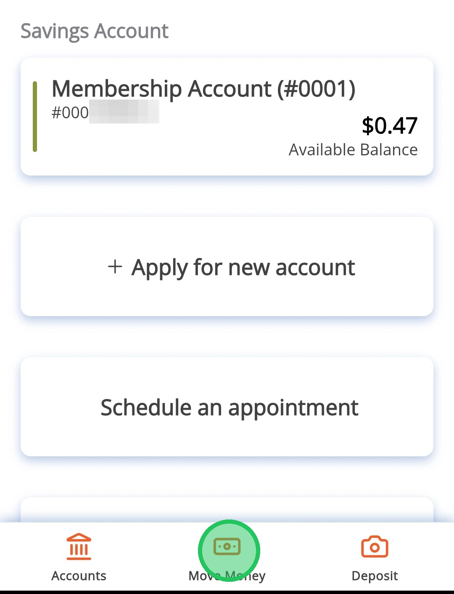
2
Tap "Internal Transfers and Payments"
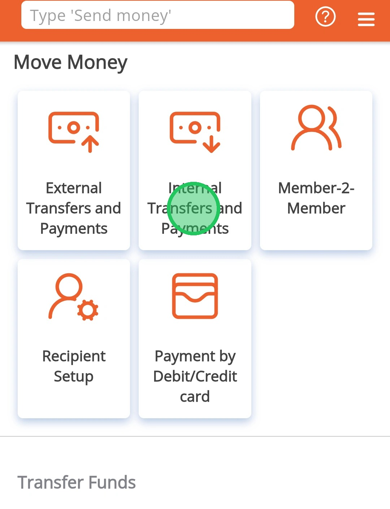
3
Tap "Select a source account" to pick the account to transfer from
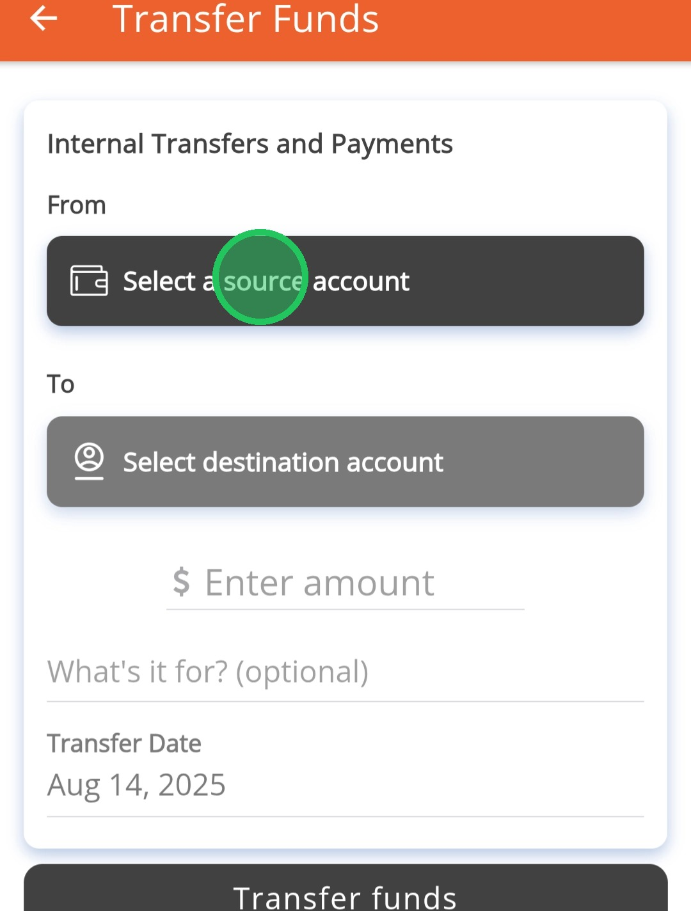
4
Select the account from the dropdown
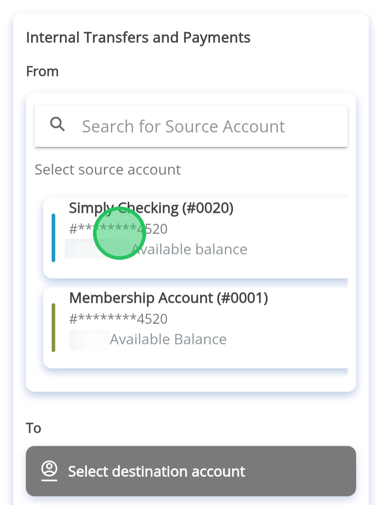
5
Tap "Select a destination account" to select the account to transfer into
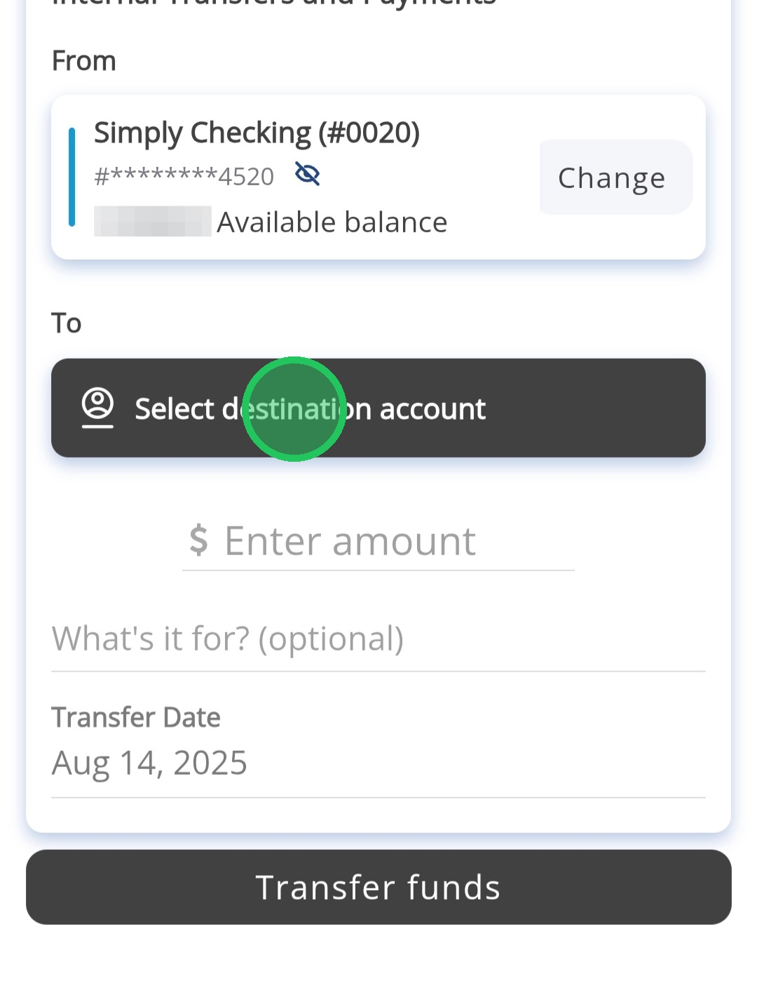
6
Select an account from the dropdown
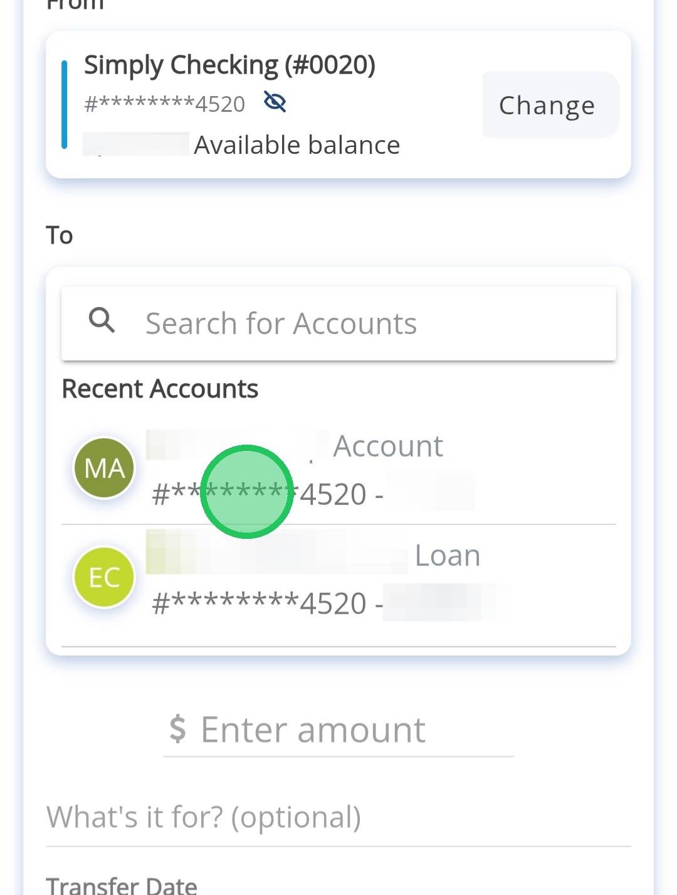
7
Tap the "Enter amount" field to enter an amount to transfer. The transfer date can be changed but will always default to today's date.
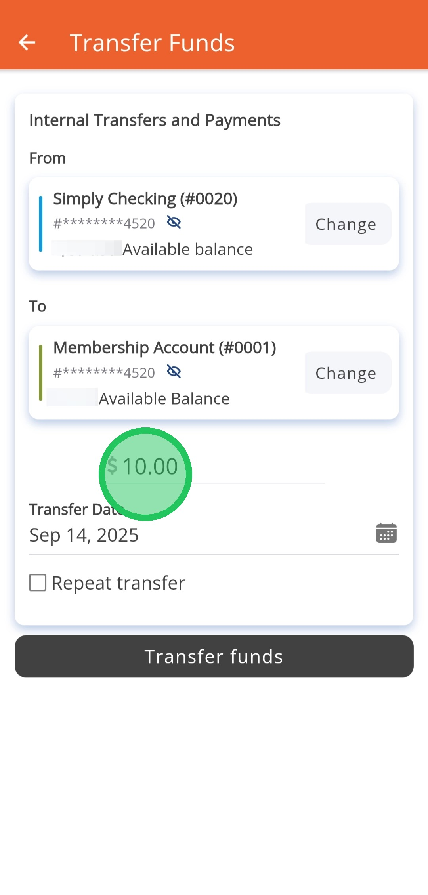
Check the box next to "Repeat transfer" to set up the transfer to be recurring
8
In the "Repeat transfer" menu you can select the frequency and the end date of the recurring transfer.
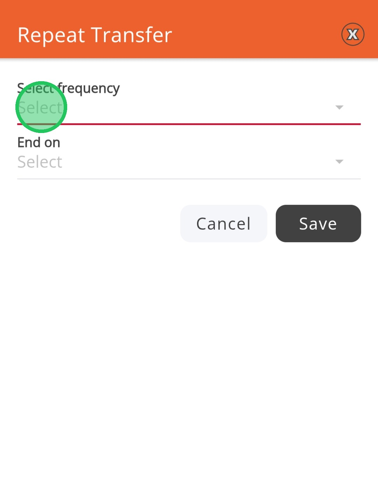
9
These are the frequencies available
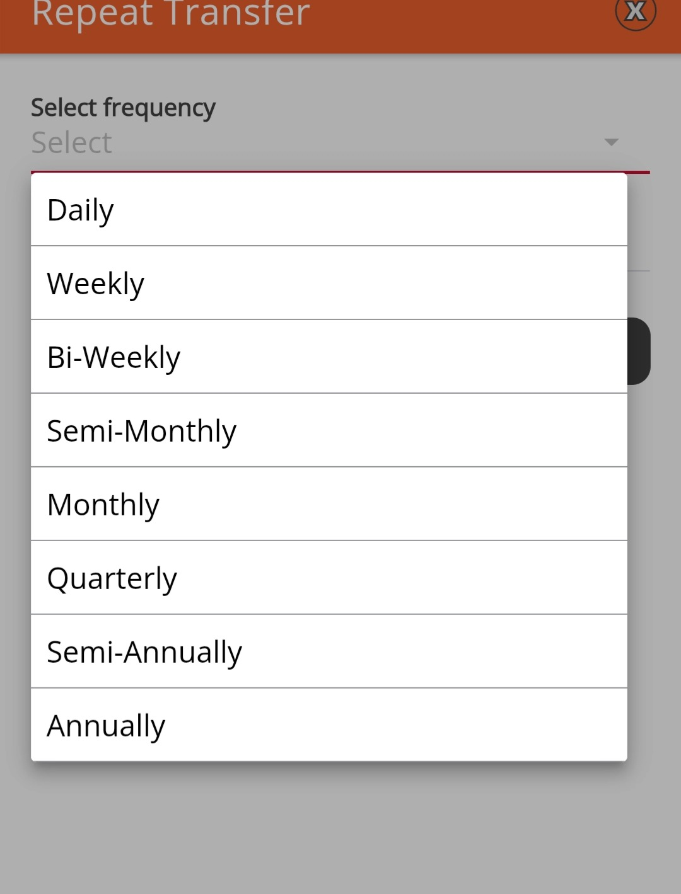
10
The transfer can either end on a set date or until you cancel
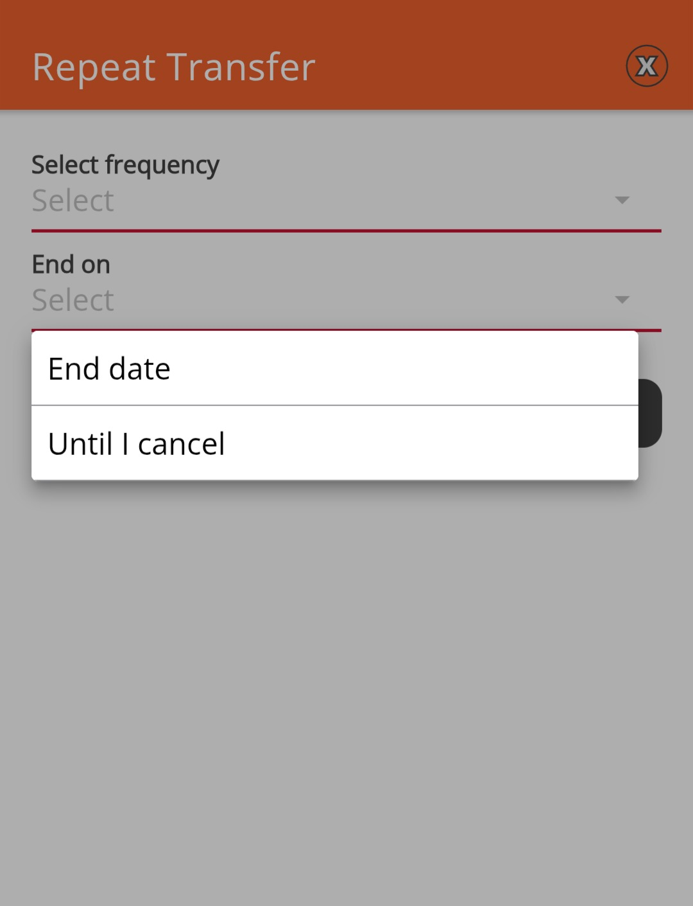
11
Tap "Transfer Funds"
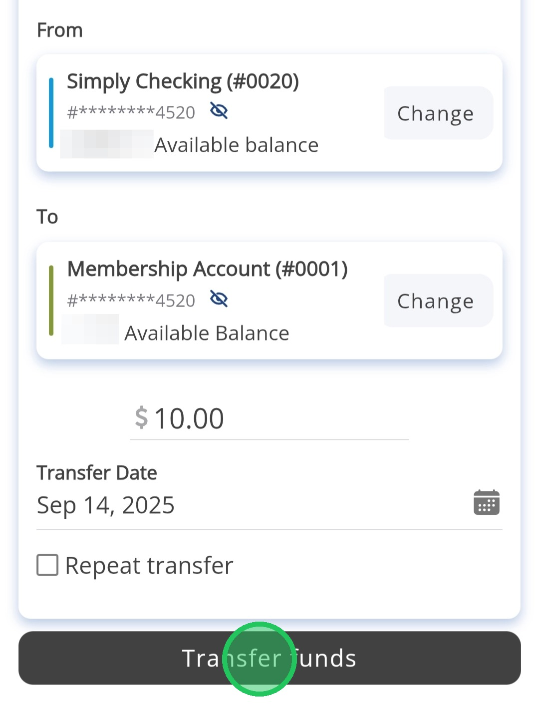
12
Review the transfer information and tap "Confirm Transfer". Tapping "Edit" will let you adjust the transfer information.
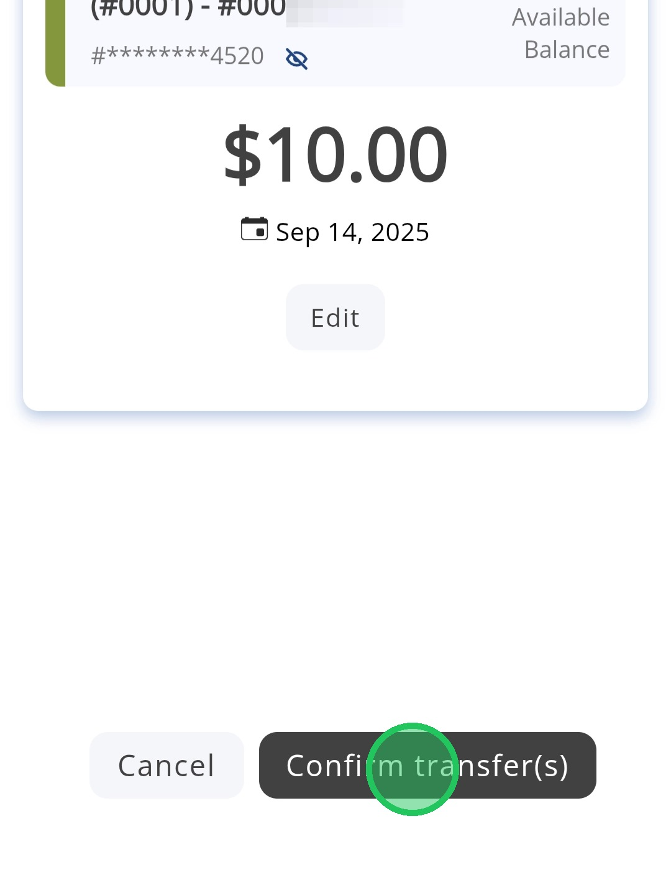
13
Tap "Done"
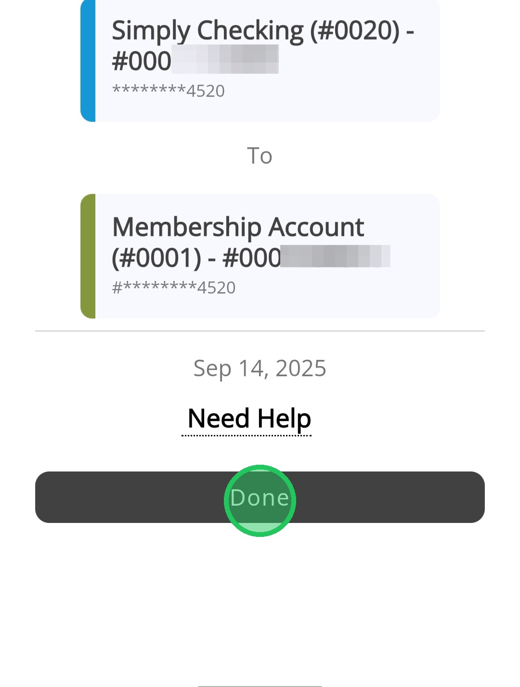
Tapping 'Need Help" will bring you to the page to submit a support ticket. Use this for any questions you have on the transfer